Raças
Humano: uma raça “neutra” sem pontos fortes nem fracos. (status iniciais +1 em força +2 em velocidade)
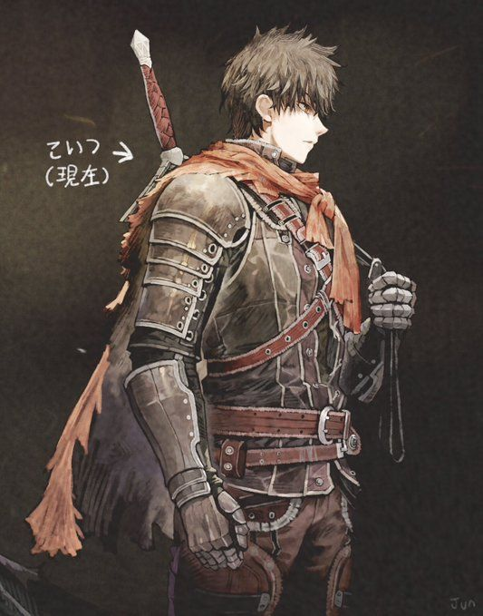Elfo: uma raça mágica, muita destreza com magia porém baixa força física. (+1 vontade +2 em inteligência +5% dano mágico -5% dano físico)
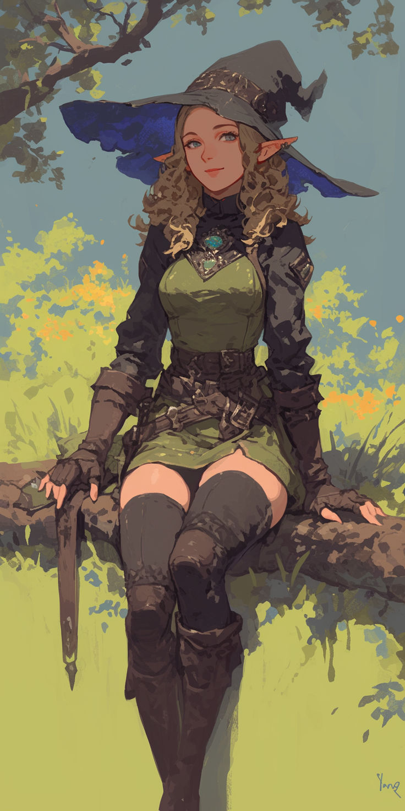Afogado: uma raça rara quase nunca vista, dizem que nem moram aqui neste mundo. (+2 em fortitude +1 em força de vontade) bônus: começam na deeps, podem ir e vir quando quiserem.(características humanoides porem com algumas rachaduras pelo corpo e alguns com olhos negros )
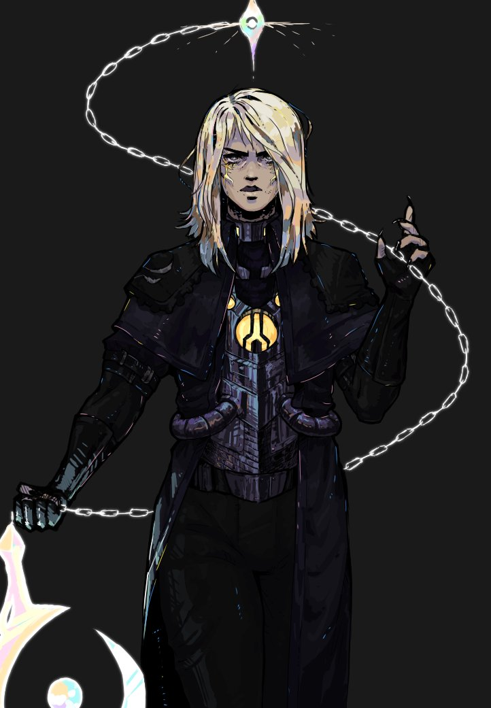Anão: uma raça extremamente resistente e forte, com muito conhecimento em armas físicas. (+1 em fortitude +2 em força, buff dependendo do tamanho da arma fisca +5% até +15%)
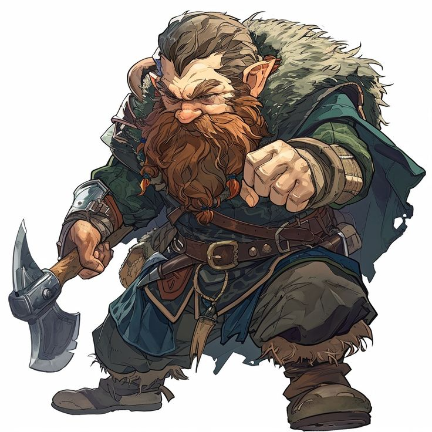Demônio: uma raça odiada e caçada por todas as outras já que se alimentam de outros seres (+ 3 em força) bônus: ao se alimentar de monstros específicos tende a evoluir e também são imunes aos dbuffs do doutor carniça.(Podem ter uma forma humanoide ou demoníaca)
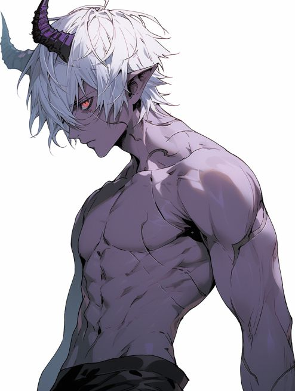 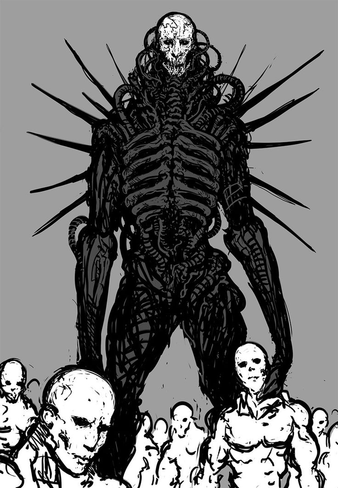Vesperiam: Uma raça estranha, são insetos normalmente besouros são EXTREMAMENTE resistente e algum com capacidade de voar ( +3 em fortitude ou +1 em fortitude e +2 em agilidade)
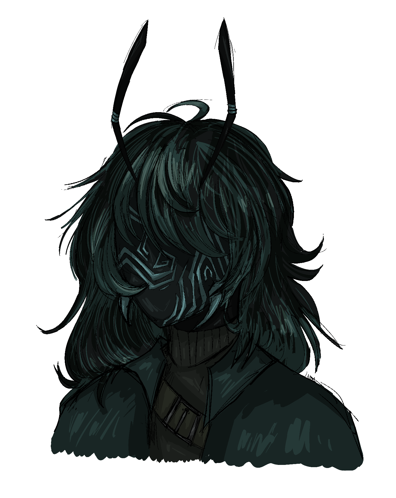 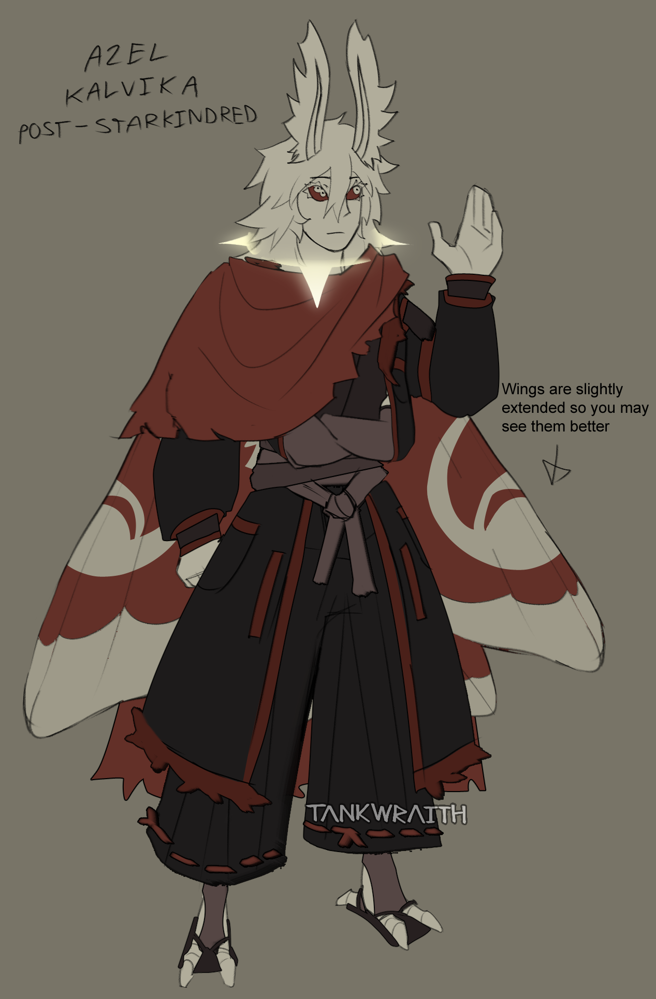Classes
Arqueiro: atiradores de longo alcance com uma ótima visão com grandes habilidade de longo alcance. (+2 em testes de percepção e aumento do dano baseado na distancia) (+2 de agilidade.+1 intelecto)
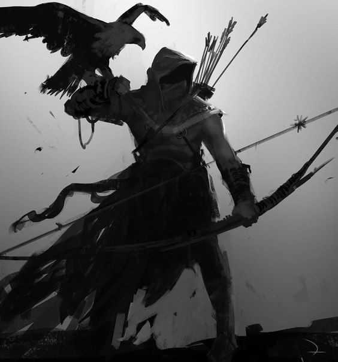Guerreiro: lutadores de curto alcance com grande bravura em seu peito. (+2 em testes de vigor e +10% de resistencia com menos de 50% da vida) (+1 fortitude +1 forca +1 vontade)
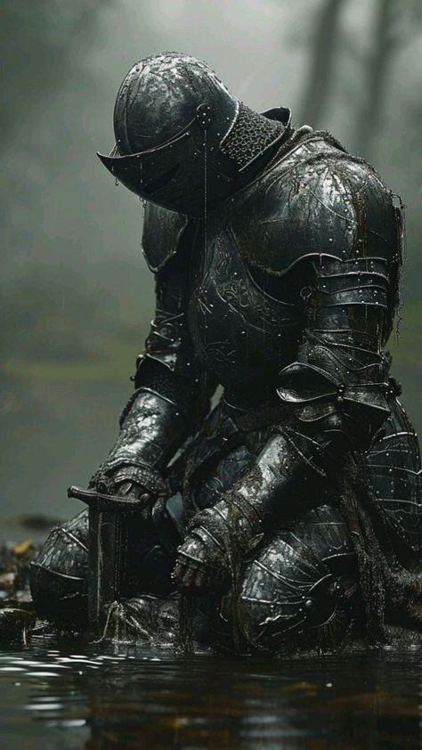Assassino: com sua grande agilidade são extremamente furtivos (+1 movimento de mobilidade por turno e dano extra se atacar atrás do adversário + 10% de dano físico) (+2 em agilidade +1 em forca)
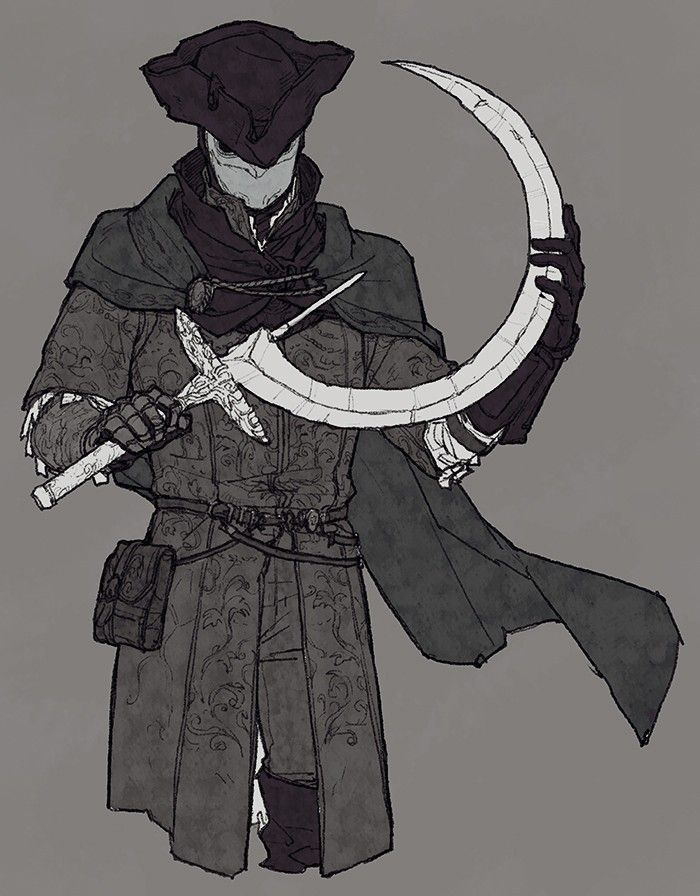Berserk: loucos por guerra, extremamente fortes (+5 de dano em ataque corpo a corpo e facilidade de enlouquecer menos) (+2 em forca +1 em vontade)
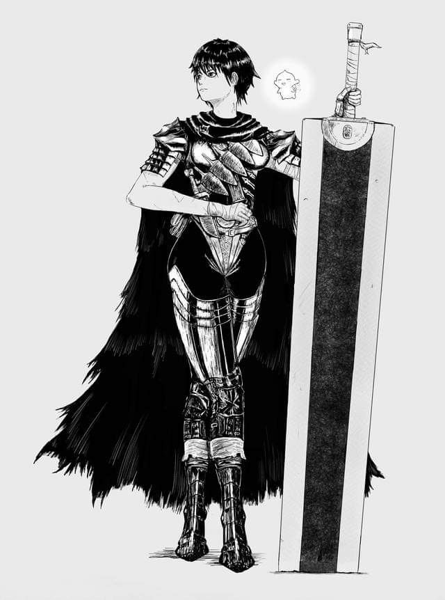Mago: pessoas com familiaridade com magia tanto do bem quanto do mal. (+10% dano com armas magias e conhecimento com magia + 2 mantras) (+2 em intelecto + 1 em carisma ou vontade)
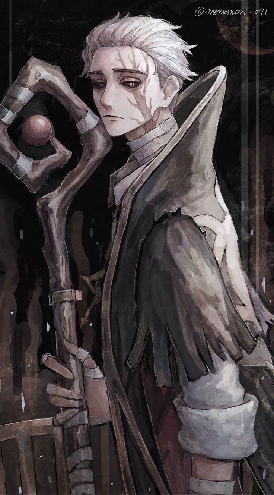Bardo: pessoas extremamentes comunicativas, empolgadas e tambem manipuladoras ,cuidado com elas> (+5 em diálogo e suas magias de cura e de ilusões são mais eficazes)| (+2 em carisma +1 em intelecto)
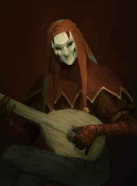Subclasses ou classes inventadas serão aceitas caso tenha sentido(fale com o mestre no pv para mais informações)
Songs
O "Song" é a forma como seu poder se mostrar, alguns possuem outros não souberam despertar e alguns não possuem. mas tem aqueles que preferem outra forma de Songs
Cada um pode ter o song de elemento diferentes.
Frost,Flame,Thunder,Gale (iniciais)
Blood,Iron,Shadow(Missão)
Mantras
mantras são Habilidades ativas dadas aos jogadores ao upar níveis ou fazer missões
★ Habilidade básica: algo simples como manipulação ou criação do seu song;
★★ Habilidade avançada: algo mais forte do seu song como uma variação ou algo do tipo;
★★★ Habilidade final: apenas apelação seja criativo ;
Talentos
Habilidades passivas baseadas em seus status dadas ao jogador ao upar níveis ou concluir missões. (são feitas pelo mestre)
Oaht
Mestres estão espalhados pelo mundo pronto para te dar suas forças e conhecimentos, porém tudo tem um preço…